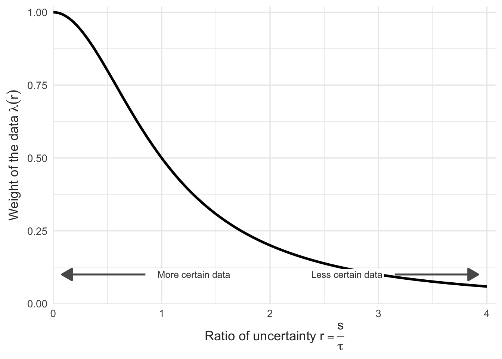
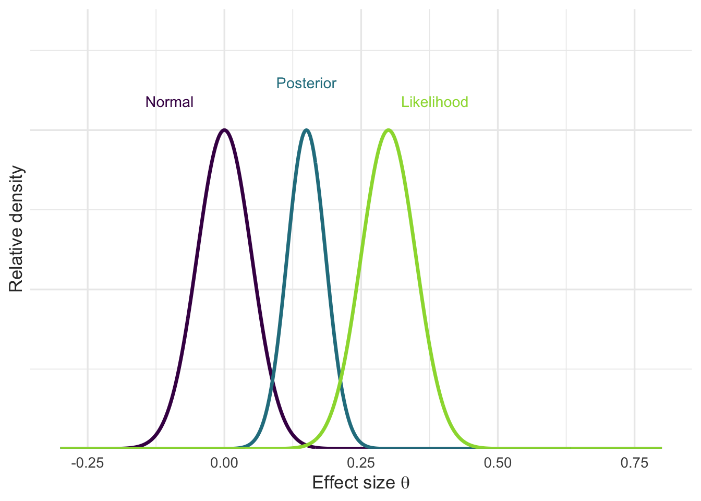
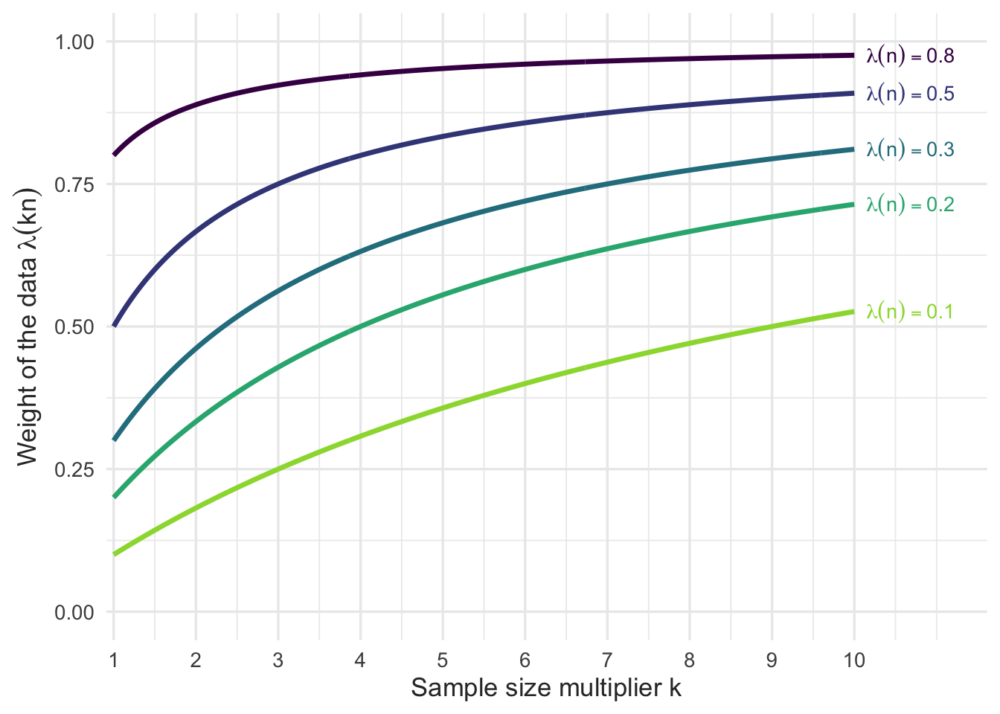
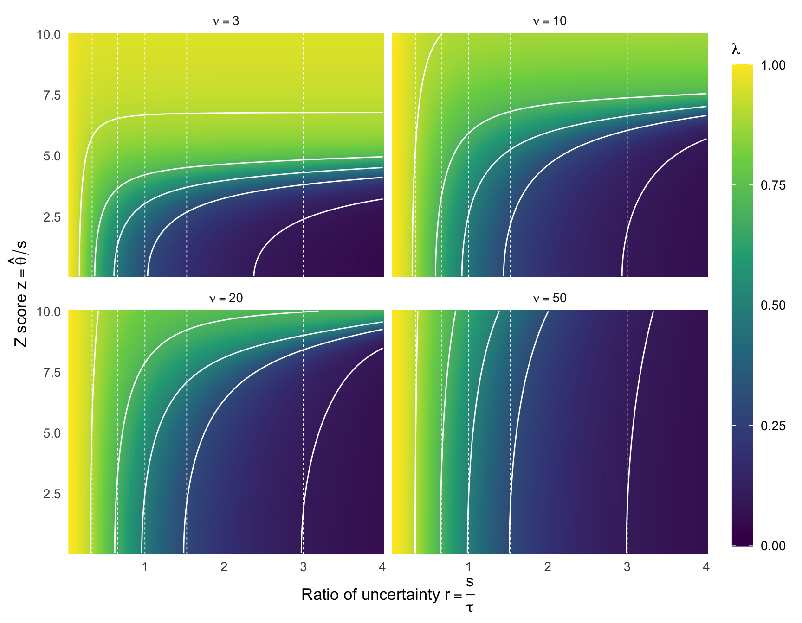
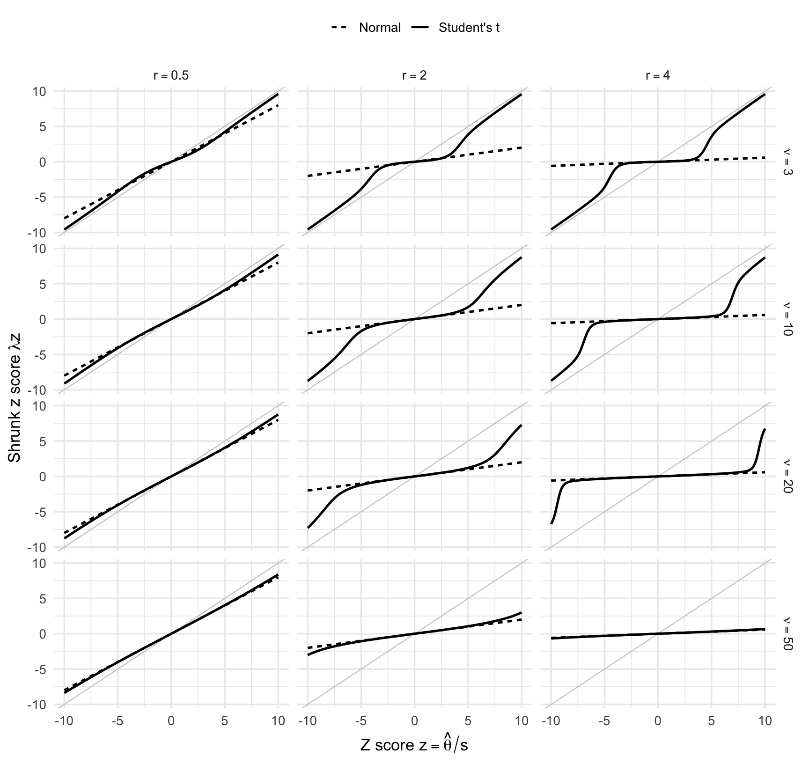

Before we get started, I want to say that here may be good reasons to use a normal prior over a Student’s t prior. Statistics may be the science of defaults, but I am not recommending the Student’s t as the default prior for anyone. Rather, this post is going to take a look at some of the properties of the normal prior as they relate to prior data conflict and we’ll see how the Student’s t’s tail behaviour can ameliorate some of that (should you think it needs ameliorating). I’m planning a longer blog post in which I discuss why one might want a Student’s t prior and what that means for robustness and shrinkage. For now, enjoy some math.
Let \(\theta\) be the true effect of some treatment, \(\hat \theta\) be the estimated effect of the treatment, and \(s\) be the associated standard error of \(\hat \theta\) (assumed known, as is common in A/B testing). Thanks to the Central Limit Theorem, we can think of \(\hat \theta\) as a normal random variable with expectation \(\theta\) and variance \(s^2\). If we place a normal prior on \(\theta\), perhaps normal with mean \(\mu\) and vairance \(\tau^2\), we get the conjugate normal model, namely
\[ \begin{align*} \hat \theta \mid \theta &\sim \operatorname{Normal}(\theta, s^2) \>, \\ \theta &\sim \operatorname{Normal}(\mu, \tau^2) \>.\end{align*} \]
The posterior mean for \(\theta\) given \(\hat \theta\) is
\[ E[\theta \mid \hat\theta] = \lambda \hat\theta + (1-\lambda)\mu, \qquad \lambda = \frac{\tau^2}{s^2 + \tau^2} \>. \]
In this form, it is straightforward to see that the posterior mean is a compromise between the prior mean and the data. Assuming the prior is fixed and that the prior mean is 0, \(\mu = 0\) (as is often assumed in A/B testing), then the estimate \(\hat \theta\) is shrunk toward 0 by a factor which depends only on the standard error and the prior standard deviation, and not at all on the point estimate. If we let \(r = s / \tau\) denote the ratio of uncertainty between the data and the prior, then the weight of the data is
\[ \lambda(r) = \dfrac{1}{1 + r^2} \>. \]
A value of \(\lambda = 1\) means the data have all the weight, and \(\lambda = 0\) means the prior has all the weight.
Shrinkage is good for a variety of reasons. However, sometimes the shrinkage afforded by the conjugate normal can place the posterior in a region supported by neither the likelihood nor the prior – a proverbial no-man’s-land of parameter space. Such cases are called prior data conflict, and can happen when the data show a large effect which the prior deems unlikely. Figure 2 shows an example. The prior and likelihood are equally certain here, so \(\lambda = 0.5\) and the posterior lands exactly halfway between them – in a region where neither one places much density.

Eventually the data will hold all the weight and this prior data conflict won’t be such a big deal. How fast does that happen? The question is easiest to answer in odds rather than weights. Rearranging \(\lambda = 1/(1 + r^2)\),
\[ \dfrac{\lambda}{1 - \lambda} = \dfrac{1}{r^2} = \dfrac{\tau^2}{s^2} \>. \]
The left side is the odds that the posterior mean favors the data over the prior. Since \(s^2 \propto 1/n\), those odds are proportional to the effective sample size, so collecting \(k\) times as much data multiplies them by exactly \(k\). Converting back to a weight,
\[ \lambda(kn) = \dfrac{k \, \lambda(n)}{1 + (k-1)\lambda(n)} \>, \qquad \dfrac{\lambda(kn)}{\lambda(n)} = \dfrac{k}{1 + (k-1)\lambda(n)} \>. \]
The consequence of increasing the sample can be read straight off the current weight of the data.

Let’s focus on the curves above for a moment. What they tell us is that “overwhelming the prior with the likelihood” can be incredibly difficult. Take the \(\lambda(n) = 0.5\) line, which corresponds to Figure 2. If I were to double my sample size, I would increase the weight of the data by only 17 percentage points. That…doesn’t feel like a good return on investment, especially if the current sample size is very large. Moreover, you can see diminishing returns on getting more data. Clearly, waiting for more data is not always a viable solution to prior data conflict.
As an aside, we can ask the question in reverse. Because the odds scale with \(n\), the sample size needed to reach a target \(\lambda^\star\) is just the ratio of the two odds,
\[ \dfrac{N}{n} = \dfrac{\lambda^\star / (1 - \lambda^\star)}{\lambda(n) / (1 - \lambda(n))} \>. \]
Moving from \(\lambda = 0.2\) to \(\lambda = 0.9\) means going from odds of \(0.25\) to odds of \(9\): a thirty-six-fold increase in effective sample size. In most experiments that is not a decision anyone gets to make. If the conflict is uncomfortable at the current sample size, waiting for more data is not the fix – the prior is.
The Student’s t prior
Consider an extension to the model above in which the prior for \(\theta\) is now a Student’s t distribution with degrees of freedom \(\nu\), mean \(\mu\), and standard deviation \(\tau\):
\[ \begin{align*} \hat \theta \mid \theta &\sim \operatorname{Normal}(\theta, s^2) \>,\\ \theta &\sim \operatorname{Student-t}(\nu, \mu, \tau^2) \>.\end{align*} \]
This model lacks a closed form posterior, so the expectation is computed by quadrature. Because the prior is heavier tailed, the weight placed on the data is now a function of the ratio of uncertainties, the degrees of freedom, and the point estimate. That last part is really important, and it means we get to plot the equivalent of Figure 1 in two dimensions. I’ll still plot \(r\) on the \(x\)-axis, and to make things scale-invariant I will plot \(z = \hat \theta / s\) on the \(y\)-axis. The plots for a few degrees of freedom are shown below.

Lighter areas indicate where the weight of the data is higher, darker areas are where the weight of the data is lower. The solid white curves are contours of \(\lambda\) under the t prior, drawn at 0.1, 0.3, 0.5, 0.7, and 0.9. The dotted white lines mark where a normal prior of the same standard deviation puts those same contours; because \(\lambda = 1/(1 + r^2)\) takes no account of the point estimate, they are vertical, sitting at \(r = \sqrt{1/\lambda - 1}\). Each dotted line pairs with the solid contour at the same value, so the horizontal distance between the two is the difference the heavy tails make. Notice that, conditional on \(r = s / \tau\) remaining constant, the data get more weight as the z score \(z\) gets larger. This is exactly the kind of behavior we want from the prior to fix the prior data conflict. Interestingly, there is adaptive shrinkage even when \(\nu\) is large enough for the prior to be approximately normal (see the \(\nu = 50\) subplot, bottom right).
Now, these are nice plots but I don’t think they really convey what is happening. Rather, if we plot z score on the \(x\)-axis and shrunk z score on the \(y\)-axis, then the behavior becomes really clear.

In my opinion, this is the clearest plot of the shrinkage behavior of the Student’s t prior and of how the various parameters affect it. As the estimate \(\hat \theta\) becomes more certain (\(r\) gets smaller), the shrinkage gets smaller for all estimates. This makes sense, because as \(r\) gets smaller the likelihood gets more weight. The degrees of freedom, \(\nu\), control how far along the \(z\) axis the prior keeps shrinking the estimate before easing off. Small values of \(\nu\) mean the Student’s t adaptively shrinks at smaller values of \(z\), while larger \(\nu\) shrink \(z\) more and more like the normal prior would.